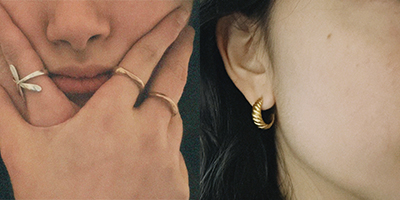
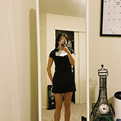

One of the best ways to get creative with an outfit is to layer, layer, layer. For this piece, I chose to layer an open button-up over a cardigan that shared similar colors, and a black mini skirt with glasses and tennis shoes. This outfit can be dressed up or more casual, and the layering gives the outfit more of a statement look, along with the glasses.
The age-old debate: are you a silver or gold jewelry person? You know what I say to that- why not both! I love to mix and match my metals. I think that it adds a bit of personality and flair to an outfit, and I tend to choose the earrings to be one metal and the rings to be the other metal. If you really would like to figure out whether gold or silver looks best on you though, gold normally works best for warmer undertones, with silver working best for silver undertones.
Many people who have seen me in this outfit assumed this was a dress, but it is in fact a blouse and a skirt! I love taking pieces and making them into completely different outfits to the naked eye, and this can also be done with layering dresses under sweaters to make them into skirts, for one example. I chose to layer a white long sleeve under the blouse due to the weather being cold, but I’ve also worn this outfit as a stand-alone and either work!
Shoes might just make or break an outfit for me, personally. It’s important to choose a shoe that matches some key component of your outfit. For example, the yellow laces on this shoe complement the yellow tank top in the outfit, with the cream colored base of the shoe matching the linen pants.
For this outfit, I chose a basic tennis shoe to complement the black and white sweatshirt. If we were to use the yellow shoes from the outfit on the left, it might look a little bit out of place due to all the muted and darker colors in the pants and the top. While it can definitely be a fashion statement, I tend to lean towards a shoe that will match the colors of the rest of my outfit in some fashion.